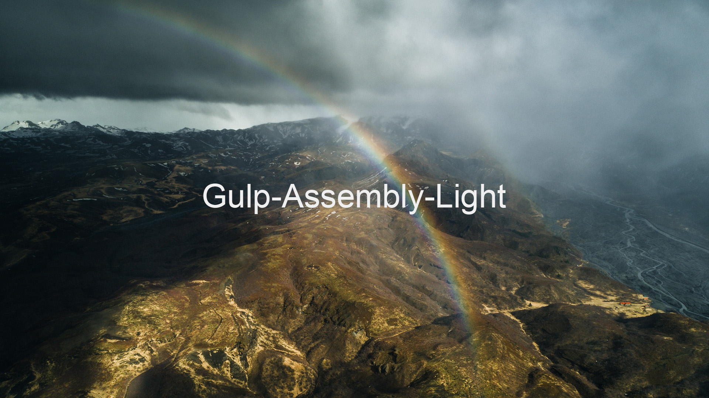

Gulp-Assembly-Light
В эту сборку входит: Gulp, Bootstrap 4,Browsersync, Autoprefixer, Clean-CSS, Del, Notify, Rename, Sass, Uglify.
Как использовать Gulp-Assembly-Light
- Скачать Gulp-Assembly-Light с GitHub;
- Установить Node Modules: npm i или yarn install;
- Запустить сборку: gulp.
Gulp tasks:
- gulp: запускает обычный gulp task(build, watchFiles, serve);
- function del(): при каждом удалении файлов в папке build, удаляет полностью папку result и перезаписывает её с изменениями.
Структура проекта
- 1. Папка с исходниками - build
- 1.1 index.html - основной html файл
- 1.2 В папке sass храняться все стили
- 1.3 В папку libs надо добавлять все стороннии библиотеки для подключения их в проект
- 1.4 Папка js содержит основной javascript файл со всеми скриптами
- 1.5 В папке img храняться все фотографии для проекта
- 1.6 В папке fonts все шрифты для проектв
- 1.7 Папка design для хранения в ней всех макетов и фотографий проекта
- 2. Папка с результатом сборки - result
- 2.1 index.html - основной html файл
- 2.2 В папке css храниться main.css в который входят все скомпилированые sass файлы
- 2.3 В папке js храниться main.js в который входят все скрипты
- 2.4 В папке img храняться все картинки проекта
- 2.5 В папке fonts храняться все шрифты